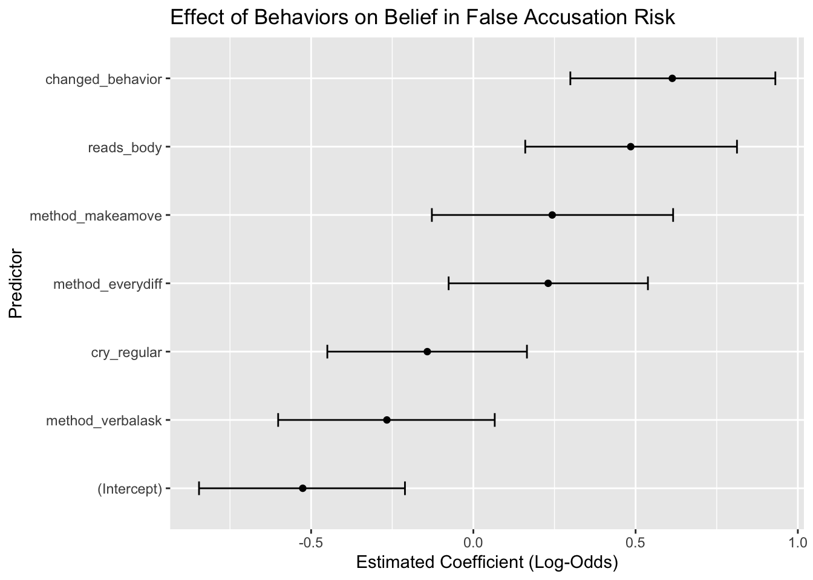
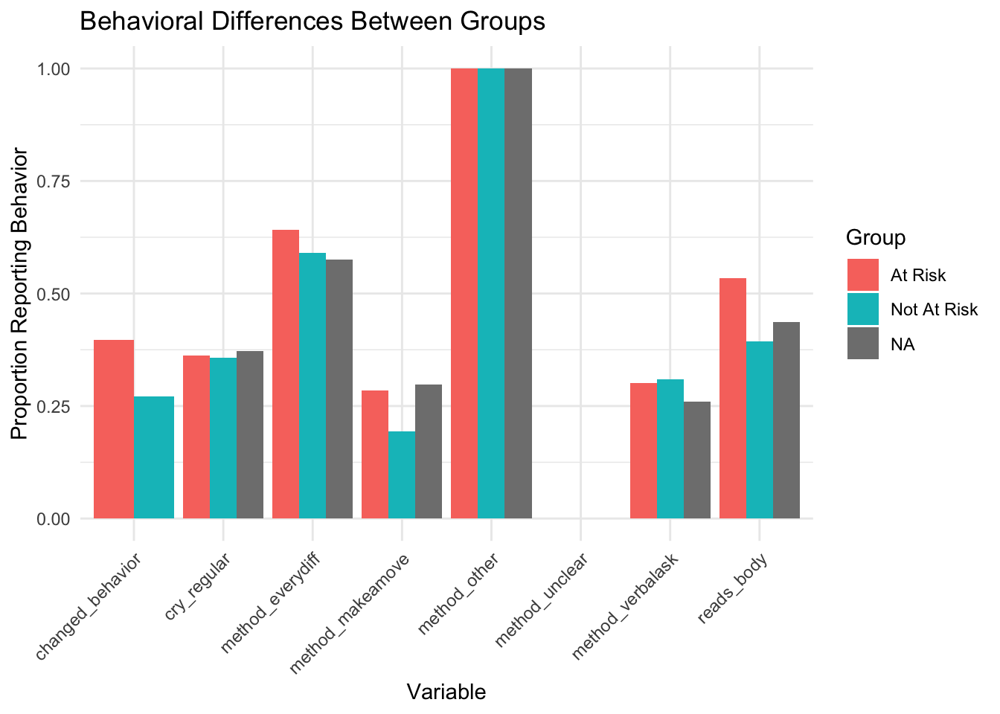

This point of this project is to look at what kinds of beliefs or behaviors are linked to men who say they feel at greater risk of being falsely accused of sexual harassment. I used data from FiveThirtyEight’s 2018 masculinity survey and focused on things like emotional expression and how people approach consent.
The main outcome comes from Question 11, which asks if someone believes men are at greater risk of being falsely accused. I turned that into a binary variable: people who said yes were coded as 1, and everyone else was coded as 0.
Exploratory Data Analysis
For the men who said they feel at greater risk, the most common ways they gauge consent were nonverbal. Most mentioned reading body language or making a move. What’s surprising is that not many of them said they ask for verbal confirmation.
A lot of them also said they’ve changed their behavior since the Me Too movement. That might mean they’re more cautious or trying to be more aware.
library(tidyverse)
── Attaching core tidyverse packages ──────────────────────── tidyverse 2.0.0 ──
✔ dplyr 1.1.4 ✔ readr 2.1.5
✔ forcats 1.0.0 ✔ stringr 1.5.1
✔ ggplot2 3.5.2 ✔ tibble 3.2.1
✔ lubridate 1.9.4 ✔ tidyr 1.3.1
✔ purrr 1.0.4
── Conflicts ────────────────────────────────────────── tidyverse_conflicts() ──
✖ dplyr::filter() masks stats::filter()
✖ dplyr::lag() masks stats::lag()
ℹ Use the conflicted package (<http://conflicted.r-lib.org/>) to force all conflicts to become errors
library(janitor)
Attaching package: 'janitor'
The following objects are masked from 'package:stats':
chisq.test, fisher.test
library(tidyr)raw <-read.csv("../Project1/data/raw.csv")# binary variablesraw$Q11binary <-ifelse(raw$q0011_0002 =="Greater risk of being accused of sexual harassment", 1, 0)raw$cry_regular <-ifelse(raw$q0007_0004 %in%c("Often", "Sometimes"), 1, 0)raw$changed_behavior <-ifelse(raw$q0015 =="Yes", 1, 0)raw$reads_body <-ifelse(raw$q0020_0001 =="Read their physical body language to see if they are interested", 1, 0)raw$method_verbalask <-ifelse(raw$q0020_0002 =="Ask for a verbal confirmation of consent", 1, 0)raw$method_makeamove <-ifelse(raw$q0020_0003 =="Make a physical move to see how they react", 1, 0)raw$method_everydiff <-ifelse(raw$q0020_0004 =="Every situation is different", 1, 0)raw$method_unclear <-ifelse(raw$q0020_0005 =="It isn’t always clear how to gauge someone’s interest", 1, 0)raw$method_other <-ifelse(!is.na(raw$q0020_0006), 1, 0)# logistic regression modelmodel <-glm(Q11binary ~ cry_regular + changed_behavior + reads_body + method_verbalask + method_makeamove + method_everydiff + method_unclear + method_other,data = raw, family = binomial)summary(model)
Call:
glm(formula = Q11binary ~ cry_regular + changed_behavior + reads_body +
method_verbalask + method_makeamove + method_everydiff +
method_unclear + method_other, family = binomial, data = raw)
Coefficients: (2 not defined because of singularities)
Estimate Std. Error z value Pr(>|z|)
(Intercept) -0.5258 0.1617 -3.251 0.001150 **
cry_regular -0.1419 0.1568 -0.905 0.365462
changed_behavior 0.6131 0.1610 3.807 0.000141 ***
reads_body 0.4850 0.1663 2.916 0.003549 **
method_verbalask -0.2665 0.1701 -1.567 0.117227
method_makeamove 0.2431 0.1895 1.283 0.199434
method_everydiff 0.2305 0.1566 1.472 0.140965
method_unclear NA NA NA NA
method_other NA NA NA NA
---
Signif. codes: 0 '***' 0.001 '**' 0.01 '*' 0.05 '.' 0.1 ' ' 1
(Dispersion parameter for binomial family taken to be 1)
Null deviance: 1028.50 on 741 degrees of freedom
Residual deviance: 995.52 on 735 degrees of freedom
(873 observations deleted due to missingness)
AIC: 1009.5
Number of Fisher Scoring iterations: 4
Results and Interpretation
I ran a logistic regression to see which behaviors are linked to feeling at risk of false accusations.
The strongest predictor was saying they had changed their behavior since the Me Too movement. That makes sense and probably shows some level of awareness or caution.
Another important variable was reading body language to figure out consent. People who said they do this were more likely to feel at risk, even though it’s one of the more unclear ways of gauging someone’s interest.
Crying often or sometimes and asking for verbal confirmation didn’t have a strong effect in the model, but they still add to the bigger picture. Even when people feel vulnerable, they don’t always turn to the most clear or direct consent strategies.
Coefficient Plot
library(broom)library(ggplot2)coefs <-tidy(model, conf.int =TRUE) %>%filter(!is.na(estimate))ggplot(coefs, aes(x =reorder(term, estimate), y = estimate)) +geom_point() +geom_errorbar(aes(ymin = conf.low, ymax = conf.high), width =0.2) +coord_flip() +labs(title ="Effect of Behaviors on Belief in False Accusation Risk",x ="Predictor",y ="Estimated Coefficient (Log-Odds)" )

This plot shows how each behavior affects the chances of someone saying they feel at risk. The lines around the dots are confidence intervals. If the line doesn’t touch zero, that means the result is statistically significant. In this case, the two predictors that really stood out were changing behavior and reading body language.
Changing behavior makes sense. If someone already feels at risk, it’s likely they’ve thought about how they act and are trying to be more careful. That kind of awareness could explain why they’re more likely to say they’ve changed how they behave in relationships. Reading body language also being significant fits with that. Nonverbal cues can be easy to misinterpret, so people who rely on them might naturally feel more anxious about being misunderstood. That could explain why they feel more vulnerable to false accusations.
Other behaviors, like asking for verbal consent, crying regularly, or making a physical move, didn’t seem to matter as much. This might mean those actions aren’t that different between the two groups, or they just don’t explain the belief as strongly when we look at everything together. Overall, this model shows that the behaviors that mix caution with some uncertainty seem to be the ones that stand out the most.
Comparison to Men Who Do Not Feel at Risk
Now I wanted to check if these behaviors were actually more common in the “at risk” group or if they just felt that way. So I compared behavior frequencies between the two groups.
# Create group labelsraw$Q11group <-ifelse(raw$Q11binary ==1, "At Risk", "Not At Risk")compare_vars <-c("cry_regular", "changed_behavior", "reads_body","method_verbalask", "method_makeamove","method_everydiff", "method_unclear", "method_other")comparison_data <- raw %>%select(Q11group, all_of(compare_vars)) %>%pivot_longer(cols =-Q11group, names_to ="Variable", values_to ="Value") %>%filter(!is.na(Value)) %>%group_by(Q11group, Variable) %>%summarize(Proportion =mean(Value), .groups ="drop")ggplot(comparison_data, aes(x = Variable, y = Proportion, fill = Q11group)) +geom_bar(stat ="identity", position ="dodge") +theme_minimal() +labs(title ="Behavioral Differences Between Groups",x ="Variable",y ="Proportion Reporting Behavior",fill ="Group") +theme(axis.text.x =element_text(angle =45, hjust =1))

What We Learn from the Comparison
This comparison shows how often each group actually reported the behaviors we studied. We see that men who feel at risk are more likely to report changing their behavior and relying on reading body language. But they are less likely to ask for verbal consent, which is surprising.
Crying regularly was reported at similar rates across both groups. The group that doesn’t feel at risk actually had slightly higher rates for saying “every situation is different” or “it’s unclear how to gauge someone’s interest.” This could mean that feeling at risk is more about perception than behavior or that those who feel at risk believe they’re being cautious, even if their actions don’t reflect that clearly.